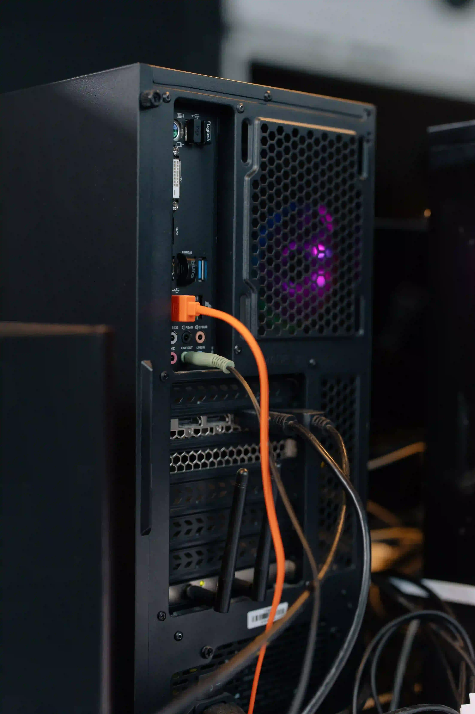
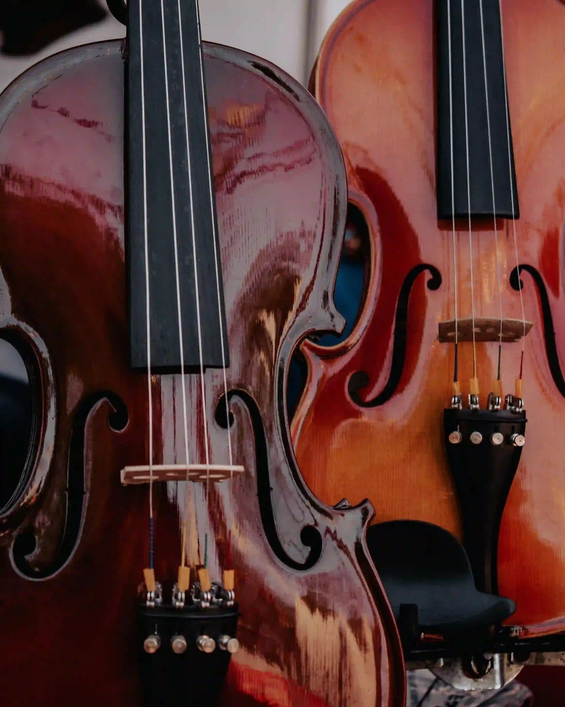

Hobby's & Interesses
Naast mijn studie breng ik mijn vrije tijd graag door met twee dingen: technologie en muziek, onder andere.
Op het eerste zicht lijken deze twee interesses niet veel met elkaar gemeen te hebben, maar in werkelijkheid hebben ze veel meer gemeen dan u zou denken.
Voor beide is geduld en precisie nodig, evenals de bereidheid om te blijven leren.
Op deze pagina vertel ik u meer over deze interesses en leg ik uit waarom ze voor mij als toekomstige programmeur belangrijk zijn.
PC-hardware & technologie

Buiten school ligt mijn voornaamste interesse bij PC-hardware.
Ik volg het nieuws over nieuwe processors, grafische kaarten, en andere componenten op de voet.
Ik vind het fascinerend hoe fabrikanten zoals AMD, Nvidia en, meer recentelijk, Intel elk hun eigen weg inslaan.
Zo hanteren ze bijvoorbeeld verschillende benaderingen van het "ray tracing" en nieuwe technieken om beelden beter en efficiënter weer te geven.
Ik vind het niet alleen interessant hoe snel een onderdeel is, maar ook waarom het zo is ontworpen.
Net als bij softwareontwerp gaan er achter elk onderdeel keuzes en afwegingen schuil.
Ik blijf ook op de hoogte van bredere technologische ontwikkelingen, zoals de evolutie van besturingssystemen (OS') die en game consoles (mede dankzij de eerder genoemde hardware) die steeds meer op PC's zullen lijken, evenals de opkomst van AI.
Ik probeer een kritische blik te behouden, omdat niet elke nieuwe technologie per sé meteen een verbetering is. Zo beschouw ik Linux bijvoorbeeld een uitstekend OS voor servers, hoewel ik het minder geschikt vind voor dagelijks gebruik op een computer.
Dit zijn de onderwerpen die ik het meest volg:
- Grafische kaarten en nieuwe grafische technieken;
- Processors en andere PC-onderdelen;
- Besturingssystemen
- Nieuwe apparaten
- AI ontwikkeling
Viool

Tijdens de pandemie ben ik begonnen met vioolspelen, en heb ik dit vier jaar aan de muziekacademie gestudeerd. Daar heb ik de basis geleerd, noten lezen, beetje theorie waar ik slecht in was, en een goede houding en technieken voor de viool.
Na vier jaar ben ik ermee gestopt omdat ik toen mijn interesse had verloren. Achteraf gezien heb ik spijt van die beslissing, want het bespelen van een instrument is niet iets wat u zomaar kunt weer oppakken.
De laatste tijd krijg ik weer zin om te spelen.
Ik ben van plan om het rustig aan te doen en mijn techniek stap voor stap weer op te bouwen. Het valt me nog steeds op hoe nauwgezet ik ben als het gaat om het stemmen van mijn instrument, want als het niet goed gestemd is, wil ik het helemaal niet spelen.
Wat mijn hobby's met programmeren te maken hebben
Hoewel PC's en violen heel verschillend lijken, leren ze me allebei dingen die ik moet weten als het om programmeren gaat.
Hardware helpt me te begrijpen hoe een computer van binnen werkt en waarom een programma soms snel en soms langzaam is, en de viool leert me gedult: u wordt alleen beter door regelmatig te oefenen, en fouten maken hoort er nu eenmaal bij.
Hetzelfde principe geldt ook voor programmeren. U schrijft zelden meteen de eerste keer perfecte code, maar door goed na te denken, stap voor stap te testen en te verbeteren, komt u er wel.
Ik wil dezelfde aanpak hanteren bij mijn studie: niet proberen alles in één keer onder de knie te krijgen, maar elke dag een beetje meer te leren.